เริ่มต้นใช้งานระบบ
ก่อนเริ่มใช้งานระบบ ผู้ใช้ต้องมีบัญชีและสิทธิ์ที่เหมาะสมกับหน้าที่ ทีม IT/Admin จะเป็นผู้สร้างบัญชีและกำหนด Role ให้
1 เข้าสู่ระบบ
เปิดเว็บเบราว์เซอร์ (แนะนำ Chrome / Edge / Firefox เวอร์ชันล่าสุด)
เข้า URL https://herbal-erp.bmscloud.in.th หรือ URL ที่ทีม IT แจ้ง
กรอก Email และ Password ที่ได้รับจาก Admin แล้วกด เข้าสู่ระบบ
ผลลัพธ์: เข้าสู่หน้า Dashboard หลัก แสดง KPI และรายการงานที่ต้องทำ2 เข้าใจโครงสร้างเมนูหลัก
| เมนูหลัก | เมนูย่อย | Path | คำอธิบาย |
|---|---|---|---|
| 📦 Inventory | Items | /inventory/items | รหัสวัตถุดิบ / บรรจุภัณฑ์ / สินค้าสำเร็จรูป ทั้งหมด |
| Lots | /inventory/lots | การจัดการ Lot + วันหมดอายุ + สถานะ Quarantine/Released | |
| Warehouses | /inventory/warehouses | คลังและที่เก็บสินค้า | |
| Transactions | /inventory/transactions | ประวัติการเคลื่อนไหวสต๊อก | |
| Expiry Alerts | /inventory/expiry-alerts | แจ้งเตือนสินค้าใกล้หมดอายุ | |
| ⚗️ Production | BOM/Recipes | /production/bom | สูตรการผลิต (Bill of Materials) |
| Work Orders | /production/work-orders | ใบสั่งผลิต + Material Weighing + Operations | |
| Batch Records | /production/batch-records | บันทึกการผลิต (eBMR) สำหรับ GMP | |
| Master Data | /master-data | IPC Criteria / Production Rooms / SOP Templates / Equipment | |
| ✅ Quality | Tests | /quality/tests | QC Test ทุกประเภท (RM, IPC, Final) |
| Specifications | /quality/specs | กำหนดเกณฑ์การทดสอบ | |
| Deviations | /quality/deviations | บันทึกความผิดปกติ | |
| 📋 GMP | Documents | /gmp/documents | ระบบเอกสาร GMP (e-DMS) |
| Changes | /gmp/changes | Change Control | |
| CAPA | /gmp/capa | การแก้ไขและป้องกัน | |
| Complaints | /gmp/complaints | ข้อร้องเรียนลูกค้า | |
| Recalls | /gmp/recalls | การเรียกคืนสินค้า | |
| Sanitation | /gmp/sanitation | ทำความสะอาด + กำจัดแมลง | |
| Stability | /gmp/stability | การศึกษาความคงตัว | |
| Internal Audit | /gmp/internal-audit | ตรวจสอบภายใน | |
| Contracts | /gmp/contracts | สัญญาจ้างผลิต/ตรวจสอบ | |
| PQR | /gmp/pqr | Product Quality Review | |
| 🚚 Purchasing | Requisitions | /purchasing/requisitions | ใบขอซื้อ (PR) |
| Purchase Orders | /purchasing/orders | ใบสั่งซื้อ (PO) + Goods Receipt | |
| Vendors | /purchasing/vendors | ข้อมูลผู้ขาย | |
| 🛒 Sales | Sales Orders | /sales/orders | SO + DO + Invoice |
| VMI Orders | /sales/vmi-orders | คำสั่งซื้อจาก VMI Portal | |
| Customers | /sales/customers | ข้อมูลลูกค้า | |
| 💰 Accounting | AP Invoices | /accounting/ap | เจ้าหนี้การค้า |
| AR Invoices | /accounting/ar | ลูกหนี้การค้า | |
| อื่น ๆ | /accounting/* | Chart of Accounts, Journal, Fixed Assets, Bank Rec, 3-Way Matching | |
| 👥 HR | Employees | /hr/employees | ข้อมูลพนักงาน |
| Training | /hr/training | ประวัติการอบรม | |
| Authorizations | /hr/authorizations | สิทธิ์การปฏิบัติงาน GMP | |
| Organization | /hr/org | โครงสร้างองค์กร | |
| 💲 Cost | Dashboard | /cost | การจัดการต้นทุน Landed Cost / Work Center / Cost Report |
| 🔗 VMI | Dashboard | /vmi | Vendor Managed Inventory + Sync |
| 📊 Reports | Dashboard | /reports | รายงานต่าง ๆ ทั่วทั้งระบบ |
| 🐞 Issues | Tracker | /issues | แจ้งปัญหา / Bug Tracker |
| 👤 Users | Users | /users | จัดการผู้ใช้งาน |
| ⚙️ Settings | Config | /settings | ตั้งค่าบริษัท / Workflow / Tolerance (Admin เท่านั้น) |
บทที่ 1: การเพิ่มและจัดการข้อมูลพื้นฐาน
ก่อนที่ระบบจะทำงานได้ครบวงจร ต้องมีข้อมูลพื้นฐาน (Master Data) ครบถ้วน ได้แก่ รหัสวัตถุดิบ รหัสบรรจุภัณฑ์ รหัสสินค้าสำเร็จรูป และสูตรการผลิต (BOM) บทนี้จะสอนวิธีสร้างและจัดการข้อมูลพื้นฐานเหล่านี้
🎯 Quick Reference
Inventory → Items ใช้สร้าง รหัสทุกประเภทของ item (Raw Material, Packaging, Consumable, Finished Goods) ในหน้าเดียวกัน โดยใช้ Item Type เป็นตัวแยกประเภท / Production → BOM ใช้ผูกสูตรการผลิต / Production → Master Data ใช้ตั้งเกณฑ์ IPC, ห้องผลิต, เครื่องจักร (ไม่ใช่สำหรับ items)1.1 การสร้างรหัสวัตถุดิบ (Raw Materials)
วัตถุดิบในระบบ Herbal ERP หมายถึงสมุนไพรสด/แห้ง สารสกัด หรือส่วนประกอบที่ใช้ในการผลิตยาสมุนไพร ทั้งหมดสร้างที่หน้า Items เดียวกัน แยกประเภทด้วย Item Type
เข้าเมนู Inventory → Items หรือใช้ /inventory/items
กดปุ่ม + สร้างใหม่ (New Item) ที่มุมบนขวา
กรอกข้อมูลที่จำเป็น (ช่องที่มี * ห้ามเว้นว่าง):
(ถ้ามี) กำหนด Reorder Point (ระดับสต๊อกขั้นต่ำ) และ Safety Stock เพื่อให้ระบบแจ้งเตือนเมื่อสต๊อกใกล้หมด
กด บันทึก (Save)
ผลลัพธ์: รายการใหม่ปรากฏในตาราง Master Data พร้อมสถานะ Active สามารถใช้ในการจัดซื้อและผลิตได้ทันทีRM- = Raw Material, PK- = Packaging, FG- = Finished Goods เพื่อง่ายต่อการค้นหา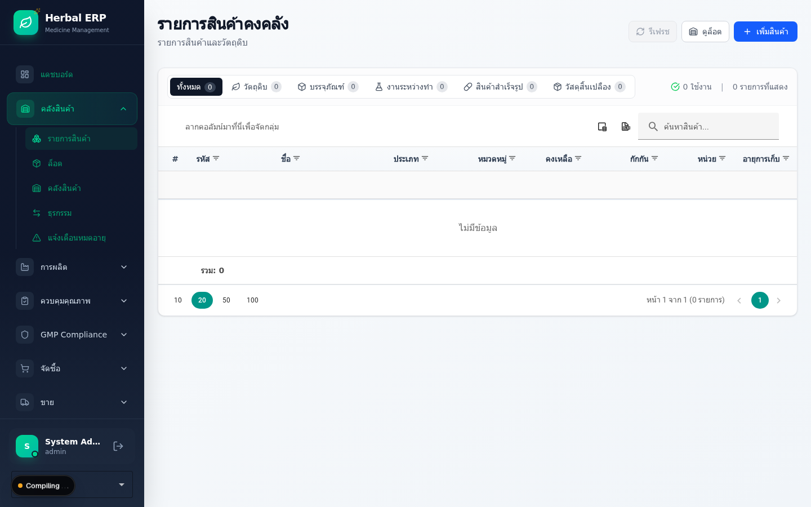
1.2 การสร้างรหัสบรรจุภัณฑ์ (Packaging)
บรรจุภัณฑ์และวัสดุสิ้นเปลืองสร้างที่ Inventory → Items เช่นเดียวกัน แต่ต้องเลือก Item Type = Packaging หรือ Consumable
| ประเภท | Item Type | ตัวอย่าง | Prefix แนะนำ |
|---|---|---|---|
| ขวดยา / ภาชนะบรรจุ | Packaging | ขวด PET 100ml, ซองอลูมิเนียม | PK- |
| ฉลาก / กล่อง | Packaging | ฉลากผลิตภัณฑ์, กล่องใส่ยา | PK-LB- |
| วัสดุสิ้นเปลือง | Consumable | ผ้ากรอง, ถุงมือ, น้ำยาทำความสะอาด | CS- |
isCritical = true เพื่อให้ระบบบังคับทำ QC ก่อนใช้1.3 การสร้างรหัสสินค้าสำเร็จรูป (Finished Goods)
สินค้าสำเร็จรูป (FG) คือผลิตภัณฑ์ขั้นสุดท้ายที่พร้อมจำหน่าย สร้างที่ Inventory → Items เลือก Item Type = Finished Goods และต้องมีข้อมูลเพิ่มเติม:
สร้างรายการแบบเดียวกับวัตถุดิบ แต่เลือก Item Type = Finished Goods
กรอกข้อมูลเพิ่มเติมสำหรับ FG:
- เลขทะเบียนยา (FDA No.) — จำเป็นสำหรับการขาย
- Shelf Life — อายุการเก็บรักษา (เดือน/ปี)
- Storage Condition — เงื่อนไขการเก็บ (อุณหภูมิ, ความชื้น)
- ราคาขาย (Selling Price) — ถ้าทราบ
กด บันทึก — ระบบจะสร้างรหัส FG พร้อมให้ไปผูก BOM ในขั้นต่อไป
1.4 การสร้างสูตรการผลิต (Bill of Materials - BOM)
BOM คือสูตรที่บอกว่า "ยา 1 Lot ต้องใช้สมุนไพร / วัตถุดิบอะไรบ้าง อย่างละเท่าไหร่" เป็นหัวใจของการตัดสต๊อกอัตโนมัติและคำนวณต้นทุน
เข้าเมนู Production → BOM หรือ /production/bom
กด + สร้าง BOM ใหม่
กรอกข้อมูล Header:
เพิ่ม BOM Lines (รายการวัตถุดิบที่ใช้) ทีละรายการ:
| Item | Qty | Unit | Note |
|---|---|---|---|
| RM-HERB-001 (ผงขมิ้น) | 500 | g | สมุนไพรหลัก |
| RM-HERB-002 (ผงพริกไทย) | 50 | g | เสริมการดูดซึม |
| PK-CAP-001 (แคปซูลเปล่า) | 1000 | pcs | บรรจุภัณฑ์ |
| PK-BTL-001 (ขวด PET) | 10 | pcs | 1 ขวด = 100 แคปซูล |
(Optional) กำหนด Operations (ขั้นตอนการผลิต) เช่น ชั่ง → ผสม → บรรจุ → ตรวจสอบ
กด Approve BOM เพื่ออนุมัติให้ใช้งานในการผลิตได้
ผลลัพธ์: สถานะ BOM เปลี่ยนเป็น Active และสามารถเรียกใช้ในใบสั่งผลิตได้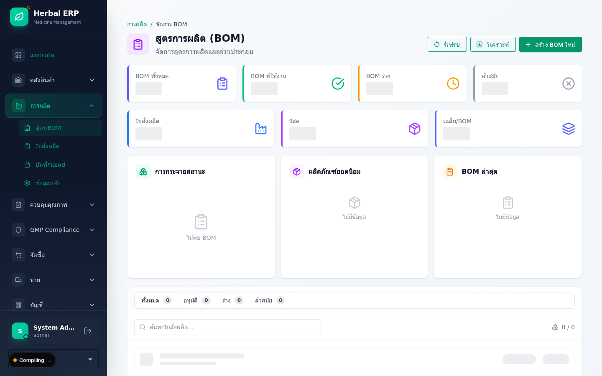
❓ คำถามที่พบบ่อย (FAQ)
ถ้าพิมพ์รหัสวัตถุดิบผิดแล้วบันทึกไปแล้ว แก้ไขได้ไหม?
เปลี่ยน BOM จาก V1 เป็น V2 จะกระทบ WO ที่กำลังผลิตไหม?
บทที่ 2: ระบบการจัดซื้อและรับเข้าวัตถุดิบ
บทนี้ครอบคลุมการสร้างใบสั่งซื้อ (PO) จาก Supplier การบันทึกรับเข้าวัตถุดิบ (GR) และการจัดการ Lot พร้อมการกักสินค้าเพื่อรอผล QC จากห้อง Lab
🎯 Quick Reference
2.1 การสร้างใบสั่งซื้อ (Purchase Order)
เข้าเมนู Purchasing → Orders หรือ /purchasing/orders
กด + สร้าง PO ใหม่
เลือก Supplier จาก dropdown (ถ้าไม่มีต้องเพิ่มใน Master Data ก่อน)
กรอก Header: วันที่สั่ง, วันที่ต้องส่ง, Payment Terms, ที่อยู่จัดส่ง
เพิ่มรายการสินค้าใน Lines: เลือก Item → กรอก Qty → ระบบแสดงราคาต่อหน่วยอัตโนมัติ (จากประวัติล่าสุดหรือราคา Contract)
ตรวจสอบยอดรวม (Subtotal, VAT, Grand Total) แล้วกด บันทึก (Save)
กด Submit for Approval — ระบบจะส่งเข้ากระบวนการอนุมัติตาม Workflow ที่ตั้งไว้
ผลลัพธ์: PO อยู่ในสถานะ Pending Approval ผู้อนุมัติจะได้รับการแจ้งเตือนเมื่อ PO ผ่านการอนุมัติ → สถานะเปลี่ยนเป็น Approved → ส่งให้ Supplier ทางอีเมลหรือพิมพ์
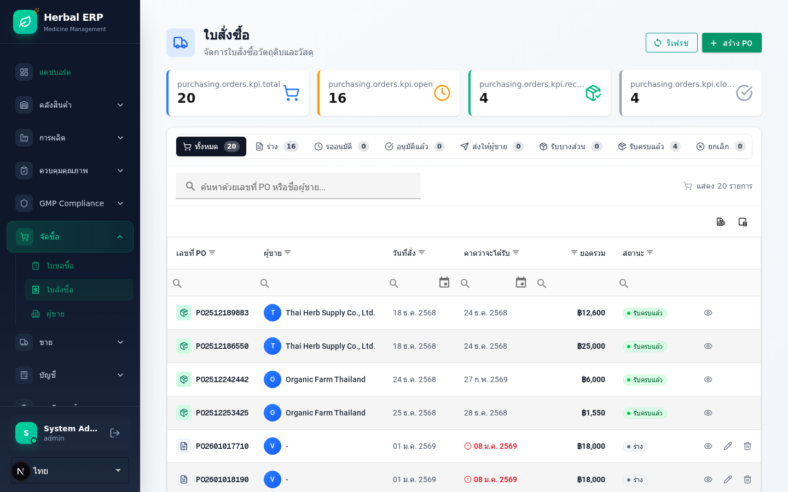
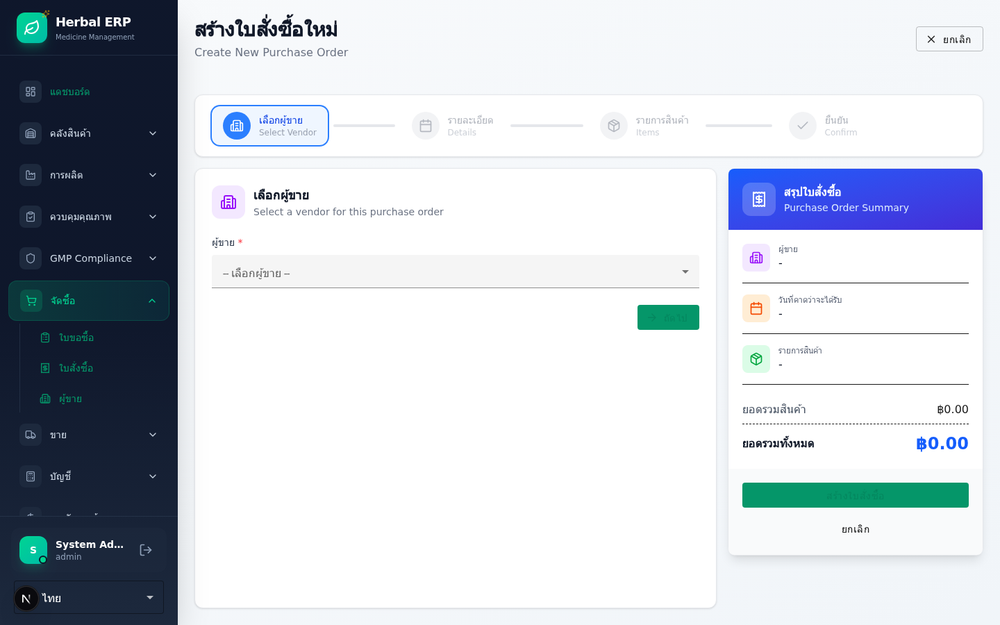
2.2 การบันทึกรับเข้าวัตถุดิบ (Goods Receipt)
เมื่อ Supplier จัดส่งวัตถุดิบมาถึง เจ้าหน้าที่คลังเปิดหน้า PO ที่ได้รับของ (สถานะ Approved)
กดปุ่ม รับเข้า (Receive) บน PO
กรอกข้อมูลการรับเข้าสำหรับแต่ละรายการ:
กด ยืนยันรับเข้า
ผลลัพธ์: ระบบสร้าง Lot ใหม่ในคลัง สถานะเป็น Quarantine (กักไว้) รอผล QC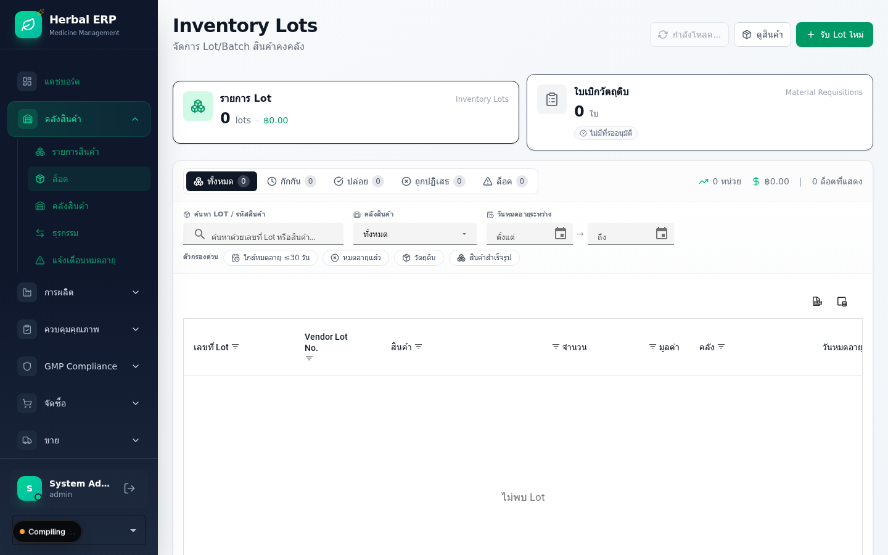
2.3 การจัดการ Lot & QC Pass (Release)
QC Manager เข้า Quality → Tests หรือ /quality/tests
เลือก Lot ที่อยู่ในสถานะ Quarantine → กด สร้าง QC Test
ระบบสร้าง Test Card ตาม Specification ที่กำหนดไว้ (เช่น ความชื้น, ค่าสารสำคัญ, เชื้อจุลินทรีย์)
กรอกผลการตรวจจาก Lab → ระบบคำนวณ Pass/Fail อัตโนมัติเทียบกับ Spec
ถ้าผ่านทุก parameter → QC Manager กด Release Lot
ผลลัพธ์: สถานะ Lot เปลี่ยนจาก Quarantine → Released สามารถเบิกไปใช้ผลิตได้ถ้าไม่ผ่าน → กด Reject พร้อมบันทึกเหตุผล — Lot จะถูกโอนไปสถานะ Rejected และตั้ง CAPA
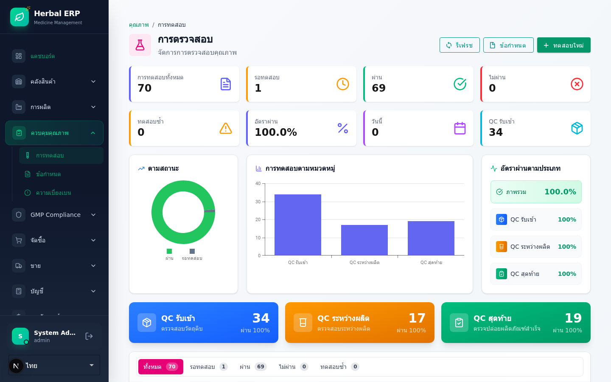
❓ FAQ
รับของมาไม่ครบตามที่สั่ง ทำอย่างไร?
ได้ของเกินปริมาณในใบ PO ทำไง?
บทที่ 3: ระบบการผลิตสมุนไพร
บทนี้ครอบคลุมกระบวนการผลิตตั้งแต่การเปิดใบสั่งผลิต (Work Order) การตัดจ่ายวัตถุดิบเข้าไลน์ผลิต ไปจนถึงการบันทึก Production Log และของเสีย
3.1 การเปิดใบสั่งผลิต (Work Order)
เข้า Production → Work Orders หรือ /production/work-orders
กด + สร้าง WO ใหม่
กรอก:
- Product — เลือกสินค้า FG ที่จะผลิต
- BOM — ระบบดึงอัตโนมัติ (เลือก Version ได้ถ้ามีหลาย)
- Quantity — จำนวนที่ต้องการผลิต
- Batch Number — ระบบสร้างให้อัตโนมัติตาม pattern
- Planned Start / End Date
- Sales Order Ref — (ถ้าผลิตตาม SO)
ระบบคำนวณ Materials Required อัตโนมัติจาก BOM × Qty ที่ต้องการผลิต
ตัวอย่าง: ถ้า BOM บอกว่า 1 Lot (1000 แคปซูล) ใช้ผงขมิ้น 500g และสั่งผลิต 5000 แคปซูล ระบบจะคำนวณว่าต้องใช้ผงขมิ้น 2500gกด Release WO เพื่อเริ่มการผลิต (เปลี่ยนสถานะจาก Draft → Released)
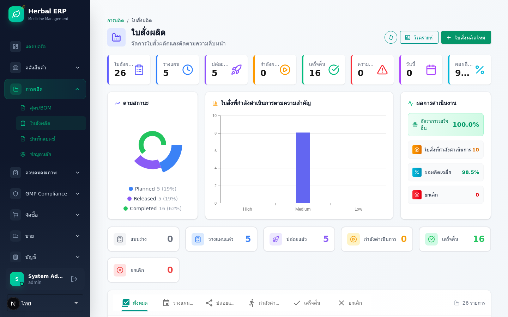
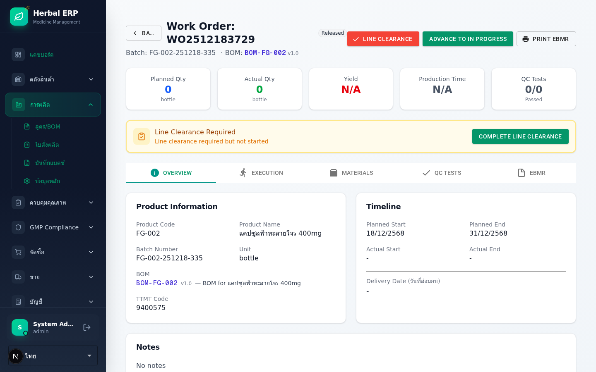
3.2 การตัดจ่ายวัตถุดิบ (Material Issue / Weighing)
ขั้นตอนนี้สำคัญมาก เพราะเป็นการเบิกวัตถุดิบจากคลังเข้าสู่ไลน์ผลิต พร้อมตรวจสอบด้วยการชั่งจริง (Dual Control)
เปิด WO ที่สถานะ Released → กด tab Material Weighing
ระบบแสดงรายการวัตถุดิบที่ต้องใช้ (จาก BOM) พร้อม Planned Qty
ผู้ชั่งเลือก Lot ที่จะใช้ (FEFO อัตโนมัติ หรือเลือกเอง) → ชั่งจริง → กรอก Weighed Qty
ผลลัพธ์: สถานะของรายการวัตถุดิบเปลี่ยนเป็น Weighed รอผู้ตรวจสอบ (Verifier)Verifier คนละคน (ต่างจากผู้ชั่ง) เข้ามาตรวจสอบแล้วกด Verify
ผลลัพธ์: ระบบตัดสต๊อกจาก Lot ที่เลือก (ตามหลัก FEFO) บันทึก Inventory Transaction พร้อมต้นทุน (WAC) และสถานะเปลี่ยนเป็น Issued3.3 การบันทึกขั้นตอนการผลิตและของเสีย
เปิด WO ที่กำลังผลิต → tab Operations จะแสดงขั้นตอนตาม BOM
ผู้ปฏิบัติงานกด Start เมื่อเริ่มแต่ละ Operation → กด Complete เมื่อเสร็จ พร้อมกรอก Actual Time
บันทึก In-Process Control (IPC) ในแต่ละจุดที่กำหนด เช่น ความหนา, ความชื้น, น้ำหนักเม็ดยา
ระบบแสดง: ค่าที่กรอกเทียบกับ Spec (Pass/Fail) แบบเรียลไทม์บันทึก Waste / Scrap ที่เกิดในแต่ละ Operation พร้อมระบุสาเหตุ
เมื่อครบทุกขั้นตอน → ระบบคำนวณ Actual Yield % เทียบกับ Planned Yield อัตโนมัติ
บทที่ 4: การรับเข้าสินค้าสำเร็จรูป
หลังผลิตเสร็จ ต้องบันทึก FG เข้าคลัง และผ่าน Final QC ก่อนปล่อยขายหรือจ่ายออก
4.1 การบันทึกรับสินค้าสำเร็จรูป (FG Receipt)
เปิด WO ที่สถานะ In Progress → ไปที่ tab FG Receipt
กรอก:
- Actual Yield — จำนวนที่ได้จริง (เช่น 4850 แคปซูล จาก Plan 5000)
- Warehouse — คลังที่เก็บ FG (โดยปกติเป็น Quarantine รอ Final QC)
- Production Date — วันที่ผลิตเสร็จ
- Expiry Date — คำนวณอัตโนมัติจาก Shelf Life ของสินค้า
กด รับเข้าคลัง
ผลลัพธ์: ระบบสร้าง FG Lot ใหม่ สถานะ Quarantine และ WO เปลี่ยนเป็น Completed (รอ Final QC)4.2 การตรวจสอบคุณภาพสุดท้าย (Final QC & Release)
QC Manager เข้า Quality → Tests → เลือก FG Lot ที่สถานะ Quarantine
สร้าง Final QC Test ตาม Specification ของ FG (ความสม่ำเสมอของตัวยา, ปริมาณสารสำคัญ, microbial limit, ฯลฯ)
กรอกผล Lab → ระบบประเมิน Pass/Fail
ถ้าผ่าน → กด Release for Sale
ผลลัพธ์: FG Lot เปลี่ยนสถานะ Quarantine → Released พร้อมขาย/จ่ายออกถ้าไม่ผ่าน → กด Reject พร้อมระบุเหตุผล → ตั้ง CAPA และไม่สามารถขายได้
บทที่ 5: ระบบการขายและรายงาน
บทนี้ครอบคลุมการออกใบกำกับภาษี/ใบส่งสินค้า และการเรียกดูรายงานสรุปต่าง ๆ
5.1 การสร้างใบกำกับภาษี / ใบส่งสินค้า (Invoice / Delivery Order)
เข้า Sales → Orders หรือ /sales/orders
สร้าง Sales Order (SO) ใหม่: เลือกลูกค้า, เพิ่มรายการสินค้า, กรอกราคา, ส่วนลด, ยืนยัน
เมื่อ SO ได้รับการยืนยัน → กด สร้าง Delivery Order (DO)
ผลลัพธ์: ระบบตัดสต๊อก FG ตาม Lot ที่ระบุ และสร้างใบส่งของกด สร้าง Invoice จาก DO → ระบบคำนวณ VAT อัตโนมัติ → พิมพ์ใบกำกับภาษี
เมื่อรับชำระเงิน → เข้า Accounting → AR / Receipts → บันทึกการรับเงิน อ้างอิง Invoice
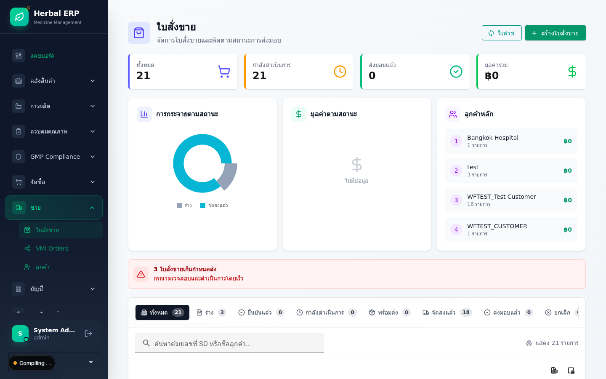
5.2 รายงานสต๊อก (Stock Balance Report)
เข้า Inventory → Lots (/inventory/lots) สำหรับดูสต๊อกตาม Lot หรือ Reports (/reports) สำหรับรายงานสรุป
เลือกตัวกรอง:
- Item Type — Raw Material / Packaging / FG / All
- Warehouse — คลังใดคลังหนึ่ง หรือทั้งหมด
- Status — Released / Quarantine / Rejected
- As of Date — ณ วันใด
กด Generate Report → ระบบแสดงตาราง Stock Balance
กด Export Excel หรือ Export PDF
5.3 รายงานการผลิต (Production Report)
รายงานสรุปการผลิต สามารถเรียกดูได้หลายมุมมอง:
| ชื่อรายงาน | คำอธิบาย | Path (เมนู) |
|---|---|---|
| Work Order Summary | สรุปใบสั่งผลิตพร้อม Yield % | Production → Work Orders/production/work-orders |
| Material Consumption | การใช้วัตถุดิบจริง vs Plan | Production → Work Orders → [เปิด WO] → tab Materials/production/work-orders/[id] |
| Yield Report | Yield เฉลี่ยต่อสินค้า/ช่วงเวลา | Reports/reports |
| Variance Report | ส่วนต่างต้นทุน Actual vs Standard | Accounting → Variance Reports/accounting/variance-reports |
| Cost Summary Report | สรุปต้นทุนต่อรายการ (WAC, Full Cost) | Cost → Reports → Cost Summary/cost/reports/cost-summary |
| Batch Record (eBMR) | บันทึกการผลิตฉบับเต็มต่อ Batch (สำหรับ GMP) | Production → Batch Records/production/batch-records |
| Changelog / Activity | ประวัติการเปลี่ยนแปลงข้อมูลทั้งระบบ | HR → Audit Trail/hr/audit |
/reports → ตั้ง Scheduleบทที่ 6: การควบคุมคุณภาพ
บทนี้ครอบคลุมการกำหนดข้อกำหนดการทดสอบ (Specification) การสร้างและบันทึกผล QC Test และการบันทึกความเบี่ยงเบน (Deviation) เมื่อพบปัญหาในกระบวนการผลิตหรือตรวจสอบ
🎯 Quick Reference
6.1 การทดสอบ (QC Test)
QC Test ใช้บันทึกผลการตรวจสอบคุณภาพของวัตถุดิบ (Incoming), ระหว่างผลิต (In-Process), และสินค้าสำเร็จรูป (Final) โดยเทียบผลกับ Specification อัตโนมัติ
เข้าเมนู Quality → Tests หรือ /quality/tests
กดปุ่ม + สร้าง QC Test ใหม่
เลือก Lot ที่ต้องการตรวจ (แสดงเฉพาะ Lot สถานะ Quarantine)
เลือกประเภทการตรวจ: Incoming (วัตถุดิบรับเข้า), In-Process (ระหว่างผลิต), Final (สินค้าสำเร็จรูป)
บันทึกผลตรวจแต่ละรายการ — ระบบจะเทียบกับ Specification ที่กำหนดไว้อัตโนมัติ
ผลลัพธ์: สถานะ Pass (ผ่าน) หรือ Fail (ไม่ผ่าน) แสดงอัตโนมัติถ้า Pass → กด Release เพื่อปล่อย Lot ใช้งาน / ถ้า Fail → กด Reject หรือ สร้าง Deviation
| ฟิลด์ | จำเป็น | คำอธิบาย |
|---|---|---|
| Test Name | ✅ | ชื่อการทดสอบ (เลือกจาก IPC Criteria / Master Data) |
| Type | ✅ | Incoming / In-Process / Final |
| Lot | ✅ | เลือก Lot ที่ต้องการตรวจ (Quarantine) |
| Result | ✅ | ค่าผลตรวจ (ตัวเลข หรือ ข้อความ) |
| Status | Auto | Pass / Fail (เทียบกับ Spec อัตโนมัติ) |
| Disposition | ถ้า Fail | การจัดการเมื่อไม่ผ่าน (Reject / Retest / Deviation) |
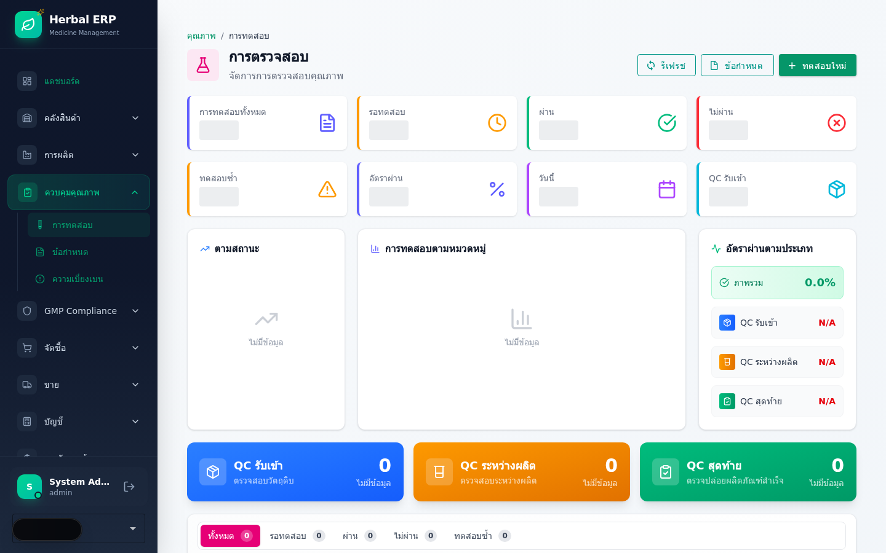
6.2 ข้อกำหนดการทดสอบ (Specification)
Specification คือเกณฑ์ที่ใช้ตัดสิน Pass/Fail ของ QC Test — กำหนดค่า Min-Max สำหรับแต่ละ Test Name ของแต่ละ Item
เข้าเมนู Quality → Specifications หรือ /quality/specs
กดปุ่ม + สร้างข้อกำหนดใหม่
เลือก Item (วัตถุดิบ หรือ สินค้าสำเร็จรูป) ที่ต้องการกำหนดเกณฑ์
กรอก: Test Name, ค่า Min-Max, หน่วย (Unit)
ถ้าเป็นค่าสำคัญ เลือก Is Critical = Yes (ค่าที่ห้ามเกินเด็ดขาด)
กด บันทึก
ผลลัพธ์: Spec จะถูกใช้อ้างอิงอัตโนมัติเมื่อสร้าง QC Test สำหรับ Item นี้| ฟิลด์ | จำเป็น | คำอธิบาย |
|---|---|---|
| Item | ✅ | เลือกสินค้าที่ต้องกำหนดเกณฑ์ |
| Test Name | ✅ | เช่น Moisture Content, Hardness, Microbial Count |
| Min Value | ✅ | ค่าต่ำสุดที่ยอมรับ |
| Max Value | ✅ | ค่าสูงสุดที่ยอมรับ |
| Unit | ✅ | หน่วย เช่น %, mg, CFU/g |
| Is Critical | ทางเลือก | ค่า Critical ห้ามเกินเด็ดขาด |
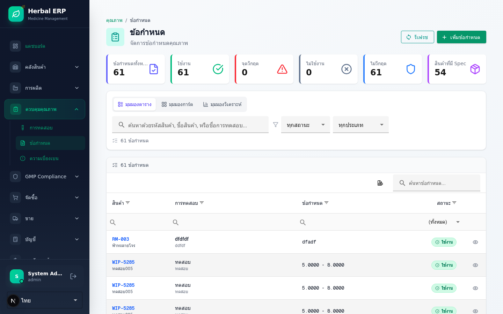
6.3 ความเบี่ยงเบน (Deviation / Non-Conformance)
Deviation ใช้บันทึกเหตุการณ์ที่ไม่เป็นไปตามมาตรฐาน เช่น QC ไม่ผ่าน, กระบวนการผลิตผิดปกติ, หรือสภาพแวดล้อมไม่ได้มาตรฐาน — ต้องวิเคราะห์สาเหตุและกำหนดมาตรการแก้ไข/ป้องกัน (CAPA)
เข้าเมนู Quality → Deviations หรือ /quality/deviations
กดปุ่ม + รายงาน Deviation ใหม่
กรอก หัวข้อ และเลือก แหล่งที่มา: Production / Quality / Warehouse
เลือก ระดับความรุนแรง: Minor (เล็กน้อย) / Major (ร้ายแรง) / Critical (วิกฤต)
บันทึก Root Cause Analysis (วิเคราะห์สาเหตุ), Corrective Action (แก้ไข), Preventive Action (ป้องกัน)
กด บันทึก → สถานะ Open → ดำเนินการ → Investigating → แก้ไขเสร็จ → Resolved → ปิด → Closed
| ฟิลด์ | จำเป็น | คำอธิบาย |
|---|---|---|
| Deviation No. | Auto | ระบบสร้างอัตโนมัติ |
| Title | ✅ | หัวข้อความเบี่ยงเบน |
| Source | ✅ | Production / Quality / Warehouse |
| Severity | ✅ | Minor / Major / Critical |
| Root Cause | ✅ | สาเหตุที่แท้จริงของปัญหา |
| Corrective Action | ✅ | มาตรการแก้ไขปัญหาเฉพาะหน้า |
| Preventive Action | ทางเลือก | มาตรการป้องกันไม่ให้เกิดซ้ำ |
| Due Date | ทางเลือก | กำหนดส่งมอบการแก้ไข |
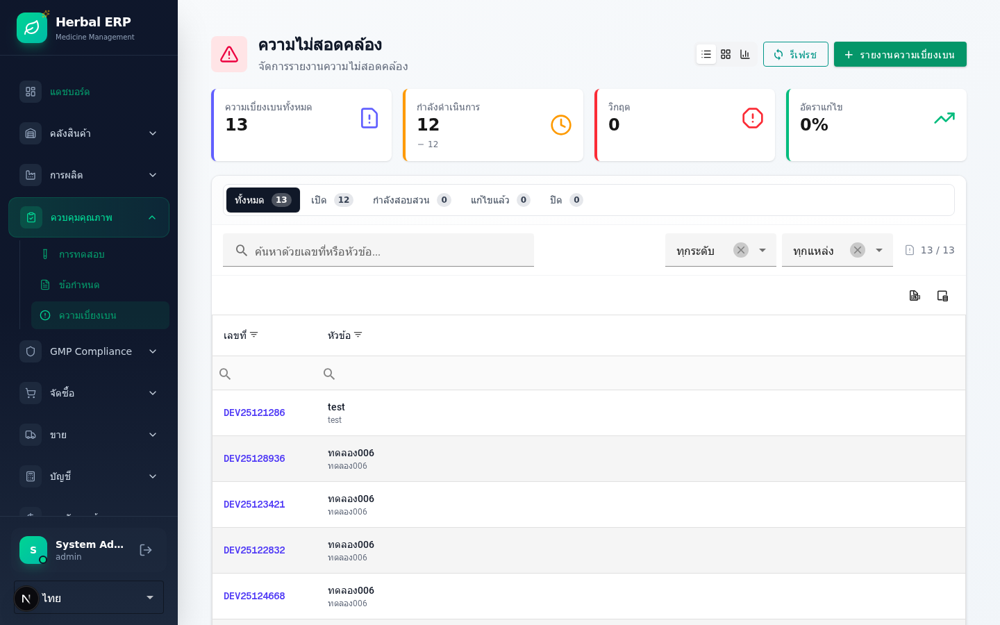
บทที่ 7: การกำหนดสิทธิผู้ใช้งาน
บทนี้ครอบคลุมการสร้างและจัดการ Role (สิทธิการเข้าถึง) และการจัดการบัญชีผู้ใช้งาน (Users) — เฉพาะ Admin เท่านั้นที่มีสิทธิ์จัดการส่วนนี้
🎯 Quick Reference
7.1 การจัดการ Role (สิทธิการใช้งาน)
Role คือชุดสิทธิ์ (Permissions) ที่กำหนดว่าผู้ใช้สามารถเข้าถึงเมนูใดบ้าง และทำอะไรได้บ้าง (ดู/สร้าง/แก้ไข/ลบ/อนุมัติ)
เข้าเมนู HR → Roles หรือ /hr/roles
กดปุ่ม + สร้าง Role ใหม่
กรอก: Code (เช่น PROD_OPERATOR), ชื่อ Role (เช่น Production Operator), คำอธิบาย
เลือก Permissions ที่ต้องการ — ระบบแสดง Permission เป็นหมวดหมู่ (Inventory, Production, Quality, etc.)
กด บันทึก
ผลลัพธ์: Role ใหม่พร้อมใช้งาน สามารถผูกกับ User ได้ทันที| ฟิลด์ | จำเป็น | คำอธิบาย |
|---|---|---|
| Code | ✅ | รหัส Role เช่น PROD_OPERATOR, QC_MANAGER |
| Name | ✅ | ชื่อ Role เช่น Production Operator |
| Description | ทางเลือก | คำอธิบายหน้าที่ของ Role |
| Permissions | ✅ | สิทธิ์การเข้าถึงแต่ละเมนู/ฟีเจอร์ |
| Status | Auto | Active / Inactive / System |
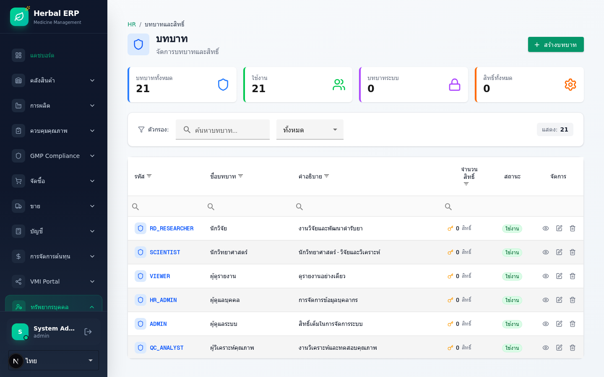
7.2 การจัดการผู้ใช้งาน (User Management)
การสร้างบัญชีผู้ใช้และกำหนด Role เพื่อให้ผู้ใช้แต่ละคนเข้าถึงระบบตามสิทธิ์ที่กำหนด — ผู้ใช้ login ด้วย Email + Password
เข้าเมนู Users หรือ /users
กดปุ่ม + เพิ่มผู้ใช้งานใหม่
กรอก: ชื่อ, Email (ใช้เป็น username), Password
เลือก Role จากรายการ HR Roles ที่สร้างไว้
เลือก Department (แผนกที่สังกัด)
กด บันทึก
ผลลัพธ์: ผู้ใช้สามารถ Login เข้าระบบได้ทันทีด้วย Email + Password ที่กำหนด| ฟิลด์ | จำเป็น | คำอธิบาย |
|---|---|---|
| Name | ✅ | ชื่อผู้ใช้งาน |
| ✅ | ใช้เป็น username สำหรับ login (ห้ามซ้ำ) | |
| Password | ✅ | รหัสผ่านเริ่มต้น (ผู้ใช้เปลี่ยนได้ภายหลัง) |
| Role | ✅ | เลือกจาก HR Roles เช่น Production Operator |
| Department | ทางเลือก | แผนกที่สังกัด เช่น ฝ่ายผลิต, ฝ่ายคุณภาพ |
| Status | Auto | Active (เปิดใช้งาน) / Inactive (ปิดใช้งาน) |
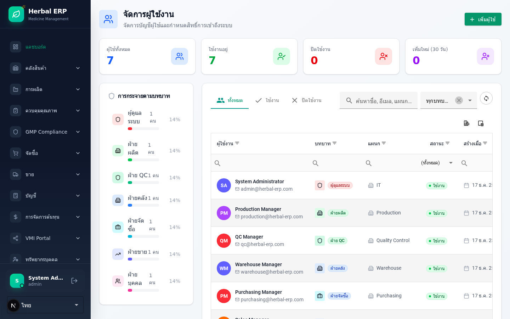
ภาคผนวก
A Keyboard Shortcuts
| ปุ่ม | การใช้งาน |
|---|---|
Ctrl + S | บันทึก (ในหน้า Form) |
Ctrl + / | Focus ช่องค้นหา |
Esc | ปิด Dialog / Popup |
Alt + N | สร้างใหม่ (ในหน้า List) |
B สถานะต่าง ๆ ในระบบ
| สถานะ | ความหมาย | ใช้ใน |
|---|---|---|
| Draft | เอกสารร่าง ยังแก้ไขได้ | PO, SO, WO |
| Pending Approval | รออนุมัติ | PO, SO |
| Approved | ผ่านการอนุมัติแล้ว | PO, SO |
| Quarantine | กักไว้รอ QC | Inventory Lot |
| Released | ปล่อยใช้งานได้ | Inventory Lot |
| Rejected | ถูกปฏิเสธ/ล้มเหลว | QC, Lot |
| Completed | เสร็จสิ้น | WO, SO |
C Glossary คำศัพท์
| คำย่อ | ชื่อเต็ม | ความหมาย |
|---|---|---|
BOM | Bill of Materials | สูตรการผลิต |
PO | Purchase Order | ใบสั่งซื้อ |
PR | Purchase Requisition | ใบขอซื้อ |
GR | Goods Receipt | ใบรับเข้าสินค้า |
WO | Work Order | ใบสั่งผลิต |
SO | Sales Order | ใบสั่งขาย |
DO | Delivery Order | ใบส่งสินค้า |
FG | Finished Goods | สินค้าสำเร็จรูป |
RM | Raw Material | วัตถุดิบ |
QC | Quality Control | การควบคุมคุณภาพ |
QA | Quality Assurance | การประกันคุณภาพ |
GMP | Good Manufacturing Practice | หลักเกณฑ์การผลิตที่ดี |
IPC | In-Process Control | การควบคุมระหว่างผลิต |
CAPA | Corrective and Preventive Action | การแก้ไขและป้องกัน |
WAC | Weighted Average Cost | ต้นทุนเฉลี่ยถ่วงน้ำหนัก |
FEFO | First Expired First Out | เบิกของที่ใกล้หมดอายุก่อน |
D ช่องทางขอความช่วยเหลือ
| เรื่อง | ช่องทาง | เวลาตอบกลับ |
|---|---|---|
| ปัญหาการใช้งานทั่วไป | Super User ประจำแผนก | ทันที |
| Bug / ระบบขัดข้อง | แจ้งที่ /issues/new | ตามระดับความสำคัญ |
| ลืม Password | System Administrator | ภายใน 1 ชั่วโมง |
| ขอสิทธิ์เพิ่ม | ผู้จัดการแผนก → Admin | ภายใน 1 วัน |
| ข้อเสนอแนะปรับปรุง | ทีม Implementation | พิจารณารายเดือน |